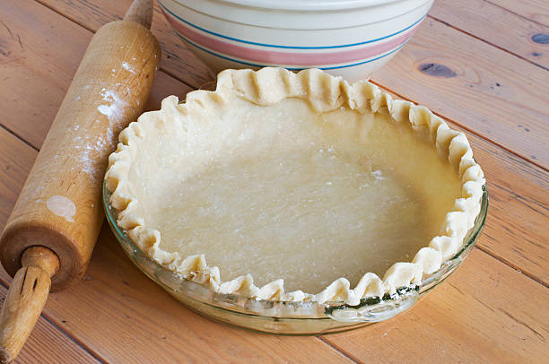

Pie Crust

The Crust!
This recipe is a full fat pie crust. It makes enough dough for 2 - 9 inch pie crusts.
Ingredients for pie crust
- 390 grams - All-purpose Flour
- 1 teaspoon - Salt
- 1/4 teaspoon - Baking Powder
- 168 grams - Cold Unsalted Butter
- 72 grams - Cold Vegetable Shortening
- 125 ml - Cold Water
Instructions for pie crust
- Combine 390 grams flour, 1 teaspoon salt, 1/4 teaspoon baking powder in a large bowl and mix.
- Add 168 grams cold butter, and 72 grams cold vegetable to the bowl and breakup butter and shorting into flour.
Looking for course crumbs with pea-sized clumps of butter and shortening.
- Add 125 ml of cold water and mix until mixture is evenly moistend and very crumbly.
- Dump crumbly dough onto a work surface and gather into a ball. Pat dough into 6 inch disk and
wrap in plastic wrap to be refrigerated for at least 45 minutes.
- Remove dough from fridge and roll into a 12 inch circle on a floured work surface. Add more flour
as needed to prevent sticking.
- Roll dough onto pin and rollout and drape onto baking pan.
- Fit into dish and cut off excess dough. Crimp edges of crust for the rim and place into refrigerator for atleast 30 minutes.
- Preheat oven to 375 degrees fahrenheit, remove crust from fridge, cover with parchment paper and fill with pie weights.
- Bake for 15 or 20 minutes until crust is pale and partially cooked. Remove pie weights.